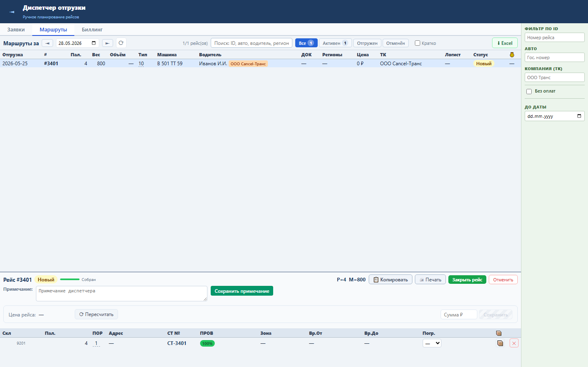
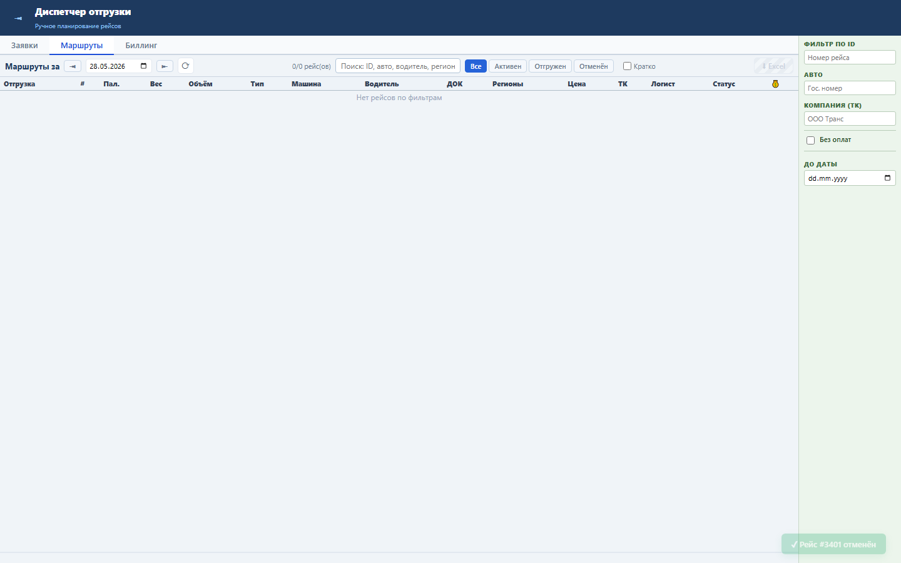

Блок нужен, чтобы отменённый рейс не блокировал СТ для повторного планирования.
Операция работает в одной транзакции: проверяет PAY_ORDER_ID, снимает TRANSTASK_ID у строк RRL_SBORKA_PALLETS, затем помечает рейс DELETED=1.
После отмены рейс пропадает из активного списка, а его СТ снова могут попасть в доступные для нового рейса.


Проверка: functional, UI smoke и безопасный service load gate пройдены.